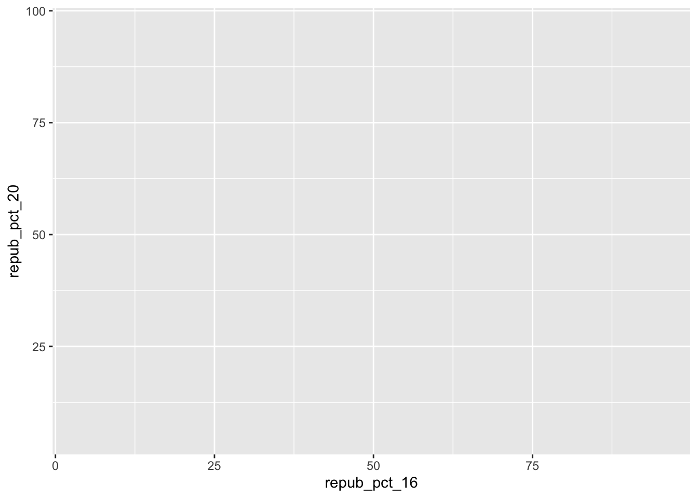

── Attaching core tidyverse packages ──────────────────────── tidyverse 2.0.0 ──
✔ dplyr 1.1.4 ✔ readr 2.1.5
✔ forcats 1.0.0 ✔ stringr 1.5.0
✔ ggplot2 3.5.1 ✔ tibble 3.2.1
✔ lubridate 1.9.3 ✔ tidyr 1.3.1
✔ purrr 1.0.2
── Conflicts ────────────────────────────────────────── tidyverse_conflicts() ──
✖ dplyr::filter() masks stats::filter()
✖ dplyr::lag() masks stats::lag()
ℹ Use the conflicted package (<http://conflicted.r-lib.org/>) to force all conflicts to become errors4 Bivariate viz
# Load data
elections <- read.csv("https://mac-stat.github.io/data/election_2020_county.csv")
# Check it out
head(elections) state_name state_abbr historical county_name county_fips total_votes_20
1 Alabama AL red Autauga County 1001 27770
2 Alabama AL red Baldwin County 1003 109679
3 Alabama AL red Barbour County 1005 10518
4 Alabama AL red Bibb County 1007 9595
5 Alabama AL red Blount County 1009 27588
6 Alabama AL red Bullock County 1011 4613
repub_pct_20 dem_pct_20 winner_20 total_votes_16 repub_pct_16 dem_pct_16
1 71.44 27.02 repub 24661 73.44 23.96
2 76.17 22.41 repub 94090 77.35 19.57
3 53.45 45.79 repub 10390 52.27 46.66
4 78.43 20.70 repub 8748 76.97 21.42
5 89.57 9.57 repub 25384 89.85 8.47
6 24.84 74.70 dem 4701 24.23 75.09
winner_16 total_votes_12 repub_pct_12 dem_pct_12 winner_12 total_population
1 repub 23909 72.63 26.58 repub 54907
2 repub 84988 77.39 21.57 repub 187114
3 repub 11459 48.34 51.25 dem 27321
4 repub 8391 73.07 26.22 repub 22754
5 repub 23980 86.49 12.35 repub 57623
6 dem 5318 23.51 76.31 dem 10746
percent_white percent_black percent_asian percent_hispanic per_capita_income
1 76 18 1 2 24571
2 83 9 1 4 26766
3 46 46 0 5 16829
4 75 22 0 2 17427
5 88 1 0 8 20730
6 22 71 0 6 18628
median_rent median_age
1 668 37.5
2 693 41.5
3 382 38.3
4 351 39.4
5 403 39.6
6 276 39.64.1 Exercise 1
We need dataset, the two variables show up in the plot, and the ggplot functions. geom_point might give this plot.
4.2 Exercise 2
# Set up the plotting frame
# How does this differ than the frame for our histogram of repub_pct_20 alone?
# It has two axis with numbers.
ggplot(elections, aes(y = repub_pct_20, x = repub_pct_16))
# Add a layer of points for each county
# The points show up is the frame.
ggplot(elections, aes(y = repub_pct_20, x = repub_pct_16)) +
geom_point()
# Change the shape of the points
# The shape of the points become stars
ggplot(elections, aes(y = repub_pct_20, x = repub_pct_16)) +
geom_point(shape = 3)
# YOU TRY: Modify the code to make the points "orange"
# NOTE: Try to anticipate if "color" or "fill" will be useful here. Then try both.
ggplot(elections, aes(y = repub_pct_20, x = repub_pct_16)) +
geom_point(color = "orange")
# Add a layer that represents each county by the state it's in
# The points become the names of the states, it isn't very tidy.
ggplot(elections, aes(y = repub_pct_20, x = repub_pct_16)) +
geom_text(aes(label = state_abbr))
4.3 Exercise 3
4.3.1 It is a strong positive relation, there are some Taxes points have higher repub_pct_20.
4.4 Exercise 4
`geom_smooth()` using method = 'gam' and formula = 'y ~ s(x, bs = "cs")'
4.4.1 a

4.4.2 b

4.5 Exercise 5
# Scatterplot of repub_pct_20 vs median_rent
ggplot(elections, aes(y = repub_pct_20, x = median_rent)) +
geom_point() +
geom_smooth(method = "lm")`geom_smooth()` using formula = 'y ~ x'
# Scatterplot of repub_pct_20 vs median_age
ggplot(elections, aes(y = repub_pct_20, x = median_age)) +
geom_point() +
geom_smooth(method = "lm")`geom_smooth()` using formula = 'y ~ x'
These two scatterplots don’t show strong relation, and the points don’t display linearly. repub_pct_20 vs median_age has a weak positive association, and repub_pct_20 vs median_rent has a negative association that is stranger than repub_pct_20 vs median_age.
4.6 Exercise 6

It is a categorical variable, the points only shows on exactly three places on x-axis.